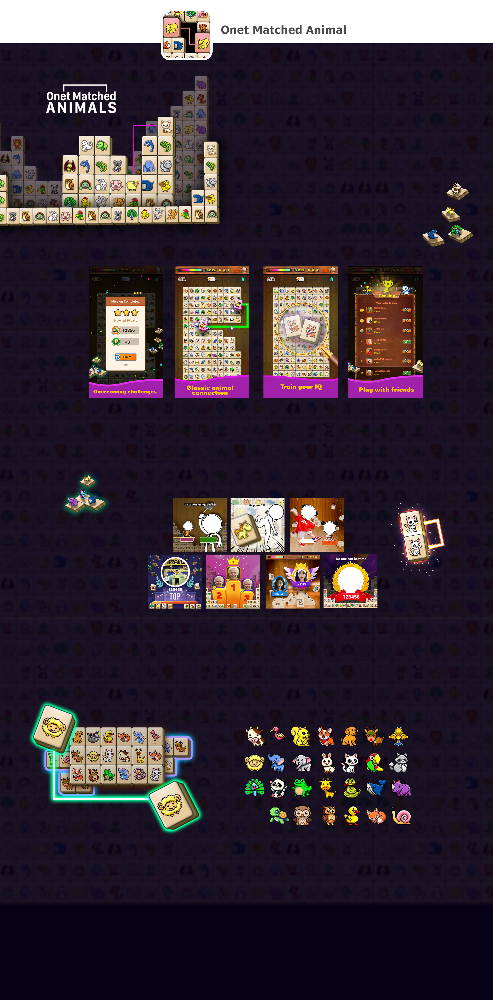

Năm sản xuất: 2019
Thể loại: Hyper casual
Nền tảng: Facebook
Lượt active hiện tại: 278K active (Thống kê hiển thị trên fb)
Lúc nặn game này, mình mất khoảng 3 ngày cho Ui, tiền đề là sử dụng lại bộ character gốc và Ux của năm 2015. Mình tham gia vận hành game này cho đến lúc nghỉ ở Hayhay.
Bởi đây là 1 con game clone theo 1 huyền thoại trên pc trước đó, mình cố gắng giữ lại một số đồ hoạ đặc trưng và stle cổ. vì vậy, xét về mặt artwork, nó ko thể tính là 1 game đẹp. Nhưng xét về góc độ quen thuộc với người chơi, nó đem lại hiệu quả bất ngờ. Đó cũng là lý do vì sao Onet-X luôn trong top 50 game fb cho đến năm 2024.
Hiện nay, do thay đổi thế hệ chơi, vận hành đã đổi lại UI vài lần để cho ra hình thái hiện tại. Nhưng không thể phủ nhận rằng tiền đề phát triển của game này là do mình tạo ra.
Giai đoạn mình tham gia vận hành, chủ yếu nhất vẫn là hệ thống banner cho cơ chế ranking nhằm sữ chân người chơi quay lại vòng game nhiều hơn.
Bộ banner dưới đây thuộc sản phẩm marketing. Mục tiêu là tăng cảm giác thắng thua của người chơi. Giai đoạn thực hiện camping này khá dài và trải đều cho tất cả các game đang phát hành của hayhay. Nên thứ tốn não nhất trong bộ banner không phải là trình bày thế nào, nó lại là làm sao kích thích được người chơi bấm vào và chơi game. mỗi game 1 cocnept khác nhau, style art khác nhau, điều đó khiến con số banner mình phải tạo ra rất lớn, và mỗi banner không được giống nhau.
Đối với hyper casual clone, mình có 2 cách để lựa chọn phong cách và style:
1: Game có lối chơi hơi mang tính “động” và chưa từng đi vào lịch sử: chọn concept mới và sự dụng style mới, UX cũng mới để phát triển game. Shoot Bubble / Number Shoot là ví dụ.
2: Game có lối chơi đã từng là huyện thoại, là game đi theo tuổi thơ của rất nhiều thế hệ: mình lựa chọn giữ lại những gì quen thuộc nhất với người chơi Ux giữ nguyên, Ui làm mới ở mức độ vừa phải. Nó đem lại cảm giác hoài niệm thân thuộc. EggShoot Dynomite / Onet-match được làm theo hướng này.
Sau khi phát triển một thời gian và có lượng người chơi nhất định, mình đã đổi bộ thú mới để giữ bản quyền thật sự cho game. Vẫn sử dụng pixel art cho character để giữ lại “chất” của game.
Aniation ko có gì nhiều đâu. con gấu này chỉ là 1 thử nghiệm marketing game thôi.